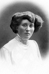
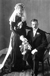
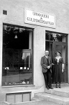
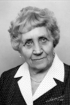
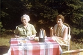
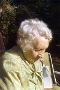

Gerda Eriksson
Blev 85 år.
| Född: | 1890-05-03 Kamlunge, Nederkalix fs, Kalix sn. [1] | |
|---|
| Levde: | 1900 Kamlunge, Nederkalix fs, Kalix sn. [2] | |
|---|
| Levde: | 1910 Kamlunge, Nederkalix fs, Kalix sn. [3] | |
|---|
| Levde: | 1911 Kamlunge, Nederkalix fs, Kalix sn. [4] | |
|---|
| Bosatt: | 1915-04-17 Boden, Överluleå fs, Bodens sn (BD). [5] | Sömmerska. |
|---|
| Änka: | 1968-03-04 Karlbergsvägen 33 2 Tr, Johanneshov, Gustav Vasa fs, Stockholms stad. [6] | |
|---|
| Levde: | 1971 Torsg 32, Sabb Vård åld.hem, Gustav Vasa fs, Stockholm stad. [7] | |
|---|
| Död: | 1976-05-01 Stockholm., Gustav Vasa fs, Stockholms stad. [8] | Sabbatsbergs Vård- och ålderdomshem. |
|---|
| Vigsel: | 1915-04-16 Kamlunge, Töre fs, Kalix sn. [9] | Bernhard Sigfrid Gustafsson, guldsmed, Öfverluleå fs och Gerda Eriksson, hushållerska. Vigselförrättare: Johannes v. Ahn. (Töre bröts ut ur Nederkalix fs år 1909). |
|---|
| Bosatt: | 1915-12-31 Yttermorjärv, Töre fs, Nederkalix sn. [10] | |
|---|
| Bosatt: | 1917-11-09 Jörn, Jörns fs, Jörns sn. [11] | Infl. överförd från Gb 525/4. |
|---|
| Levde: | 1926 Jörn, Jörns fs, Jörns sn. [12] | |
|---|
| Inflyttad till: | 1930-12-23 Skellefteå stad. [13] | |
|---|
Personhistoria
| Årtal | Ålder | Händelse |
|---|
| 1890 |
|
Födelse 1890-05-03 Kamlunge, Nederkalix fs, Kalix sn [1] |
| 1893 |
2 år |
Systern Alma Viktoria Eriksson föds 1893-01-29 Kamlunge, Nederkalix fs, Kalix sn [14] |
| 1895 |
4 år |
Systern Selma Eriksson föds 1895-04-29 Kamlunge, Nederkalix fs, Kalix sn [14] |
| 1895 |
5 år |
Systern Alma Viktoria Eriksson dör 1895-07-04 Kamlunge, Nederkalix fs, Kalix sn [14] |
| 1898 |
8 år |
Systern Alma Viktoria Eriksson föds 1898-07-11 Kamlunge, Nederkalix fs, Kalix sn [14] |
| 1900 |
|
Levde 1900 Kamlunge, Nederkalix fs, Kalix sn [2] |
| 1910 |
|
Levde 1910 Kamlunge, Nederkalix fs, Kalix sn [3] |
| 1911 |
|
Levde 1911 Kamlunge, Nederkalix fs, Kalix sn [4] |
| 1912 |
22 år |
Sonen Bert Erik Gerhard Brudell föds 1912-07-17 Boden, Överluleå fs, Bodens sn (BD) [15] |
| 1915 |
24 år |
Vigsel Bernhard Sigfrid Gustafsson Brudell 1915-04-16 Kamlunge, Töre fs, Kalix sn [9] |
| 1915 |
24 år |
Bosatt 1915-04-17 Boden, Överluleå fs, Bodens sn (BD) [5] |
| 1915 |
25 år |
Dottern Gerda Birgit Signhild Brudell föds 1915-12-16 Kamlunge, Töre fs, Kalix sn [16] |
| 1915 |
25 år |
Bosatt Bernhard Sigfrid Gustafsson Brudell 1915-12-31 Yttermorjärv, Töre fs, Nederkalix sn [10] |
| 1917 |
27 år |
Bosatt Bernhard Sigfrid Gustafsson Brudell 1917-11-09 Jörn, Jörns fs, Jörns sn [11] |
| 1919 |
28 år |
Dottern Mabel Bernhild Brudell föds 1919-01-10 Jörns fs, Jörns sn [17] |
| 1921 |
31 år |
Modern Anna Henrika Johansdotter Blombäck dör 1921-10-26 Kamlunge, Töre fs, Kalix sn [18] |
| 1926 |
|
Levde Bernhard Sigfrid Gustafsson Brudell 1926 Jörn, Jörns fs, Jörns sn [12] |
| 1930 |
40 år |
Inflyttad till Bernhard Sigfrid Gustafsson Brudell 1930-12-23 Skellefteå stad [13] |
| 1936 |
45 år |
Systern Erika Eriksson dör 1936-02-22 Nederkalix fs, Kalix sn [19] |
| 1950 |
60 år |
Fadern Erik Albert Kanon dör 1950-06-19 Kommunalhemmet, Töre kbfd, Nederkalix sn [20] |
| 1961 |
71 år |
Dottern Mabel Bernhild Brudell dör 1961-09-28 Bildhuggarvägen 16, Enskede fs, Stockholms stad [21] |
| 1962 |
72 år |
Brodern Karl Eriksson dör 1962-12-23 Kanontorp 1:2, Kamlunge, Töre kbfd, Töre kn [22] |
| 1967 |
77 år |
Systern Hilda Maria Eriksson dör 1967-08-28 Stg 86 T, Kalix, Nederkalix fs, Kalix kn [23] |
| 1968 |
77 år |
Maken Bernhard Sigfrid Gustafsson Brudell dör 1968-03-04 Karlbergsvägen 33 2 Tr, Johanneshov, Gustav Vasa fs, Stockholms stad [6] |
| 1968 |
77 år |
Änka 1968-03-04 Karlbergsvägen 33 2 Tr, Johanneshov, Gustav Vasa fs, Stockholms stad [6] |
| 1971 |
|
Levde 1971 Torsg 32, Sabb Vård åld.hem, Gustav Vasa fs, Stockholm stad [7] |
| 1972 |
81 år |
Brodern Johan Albert Eriksson dör 1972-03-12 Kamlunge, Morjärv, Töre kbfd, Kalix kn [24] |
| 1976 |
85 år |
Död 1976-05-01 Stockholm., Gustav Vasa fs, Stockholms stad [8] |
Källor
| [1] | Nederkalix C:8 1890/150 k.9/12,k AI:11A fol. 136, Mtl Stockholms stad och län 1971 |
| |
| | |
| [2] | ANNO 1900 |
| |
| | |
| [3] | Nederkalix AIIA:2 (1910-1910) fol. 32 k.1/6 |
| |
| | |
| [4] | Nederkalix AII:1B (1909-1920) fol. 548 k.5/6 |
| |
| | |
| [5] | Överluleå B:5 Infl (1912-1915) löpnr. 272, Förs.bok s.2262 k.3/5, Töre AIIA:1B (1909-1920) fol. 548 k.5/6 |
| |
| | |
| [6] | DOR 68 / PA, DB / DOR 68 / RFV 70 / RFV 70 |
| |
| | |
| [7] | Mtl Stockholms stad och län 1971 |
| |
| | |
| [8] | RTB 76, MTL 71 |
| |
| | |
| [9] | Töre E SCB (1909-1917) 8/1915 22-1 k.1/3 |
| |
| | |
| [10] | Överluleå B:4 (1912-1916) löpnr. 466/1915 s.131 k.3/3, Töre AIIa1c (1909-1920) fol. 915 k.5/6 |
| |
| | |
| [11] | Jörn AIIa:6 (1918-1926) s.85 k.2/8, Töre AIIA:1C (1909-1920) fol. 915 k.5/6 |
| |
| | |
| [12] | Jörn AIIa:6 (1918-1926) s.85 k.2/8 |
| |
| | |
| [13] | Skellefteå Sankt Olov AIIA:2C (1929-1931) fol. 552 |
| |
| | |
| [14] | Nederkalix AI:11A fol. 136 |
| |
| | |
| [15] | Överluleå C:9 (1912-1913) nr 468/1912 k.6/9, SPAR 90, RTB 81 |
| |
| | |
| [16] | Födelsebok (1909-1919) nr.122/1915 s.146 |
| |
| | |
| [17] | Jörn C:6 (1918-1920) nr. 9/1919 s.55 k.2/7 |
| |
| | |
| [18] | Töre F:1 (1920-1925) 43/1921 fol. 93 k.3/3 |
| |
| | |
| [19] | DB, FS / DOR 52-60 |
| |
| | |
| [20] | DB, FS / DOR 50-51 |
| |
| | |
| [21] | DB, PA / DOR 61 |
| |
| | |
| [22] | DB, FS / DOR 62 |
| |
| | |
| [23] | DB, FS / DOR 67 |
| |
| | |
| [24] | Mtl 71 / RTBd 72 |
| |
|
|  |
| Gerda Eriksson. |
| |
|  |
| 1915-04-16. Gerda Eriksson, sömmerska och Bernhard Brudell, guldsmed. Vigsel i Töre kyrka, Kalix sn. |
| |
|  |
| Bernhard och Gerda Brudell utanför sitt Urmakeri och Guldsmedsaffär i Vasastan, Stockholm. |
| |
|  |
| 1968. Gerda Brudell, Stockholm. |
| |
|  |
| 1971. Gerda Brudell 81 och Birgit Forsell 55 på Dalaröbesök. |
| |
|  |
| 1971. Gerda Brudell 81 år på Dalarö. |
|
{kind=link}
{kind=link}
{kind=link}
{kind=link}
{kind=link}
{kind=link}